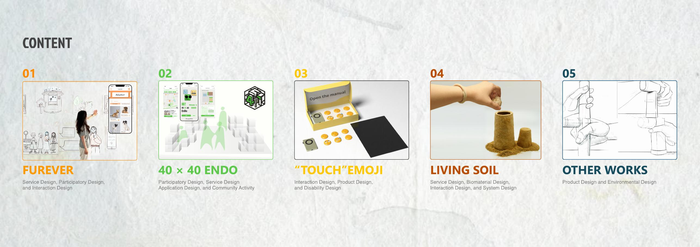

What I’m looking for
I am currently looking for internship and graduate opportunities related to AI product, UX, interaction design, service design, HRI, and human-centred technology.
I am a designer with training across industrial design and creative robotics, interested in how research, prototyping, and product thinking can work together in human-centred systems.

I am currently looking for internship and graduate opportunities related to AI product, UX, interaction design, service design, HRI, and human-centred technology.
I enjoy connecting research, concept framing, prototyping, and communication. My work often moves between systems thinking, interaction, and technical experimentation.
Education
A design foundation developed across China, Russia, and the UK.
MSc Creative Robotics · London, UK
Relevant areas: embedded systems and soft robotics, applied machine learning, creative making and applied robotics, critical robotics.
BSc Industrial Design (2+2 Program) · Saint Petersburg, Russia
GPA 5.0/5.0 · Rank 1 in major.
BSc Industrial Design (2+2 Program) · Xuzhou, China
GPA 3.7/4.0 · Rank 2 in major.
Marketing Operations and Graphic Design Intern · Jul 2024 — Aug 2024
Supported exhibition materials, brand visuals, account maintenance, and cross-team coordination.
Skills
A mix of visual design, prototyping, and technical tools that supports both concept development and implementation.
Chinese (native), English (study and project communication), Russian (basic communication), Korean (beginner).
Awards & activities
For the magnetic wall-climbing robot chassis optimisation project.
National public scholarship support.
Led public account rebuilding, visual content, posters, cultural products, and editing work.
Produced short videos and media materials for campus channels and large events.